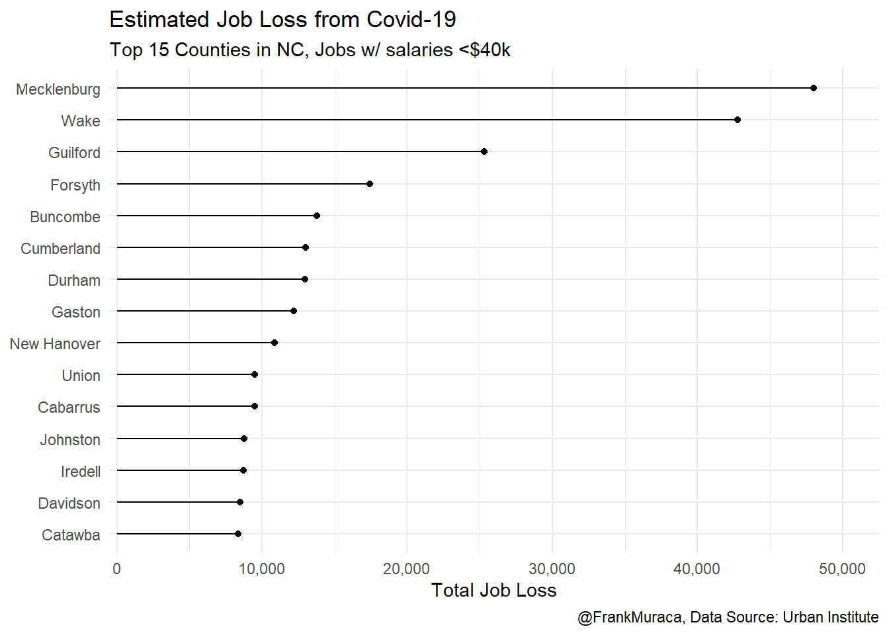
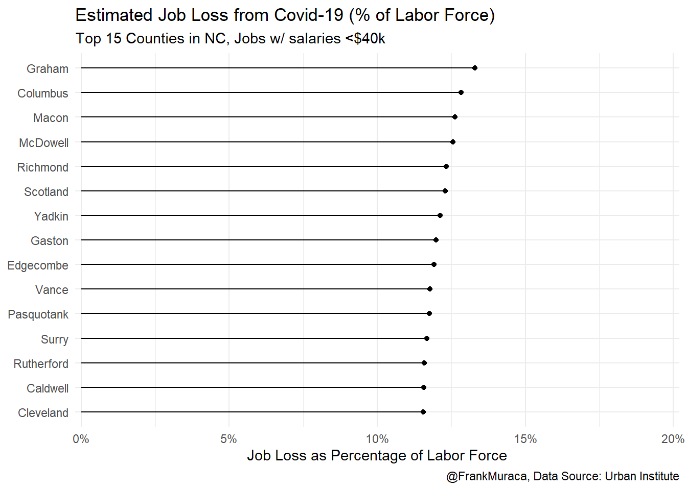
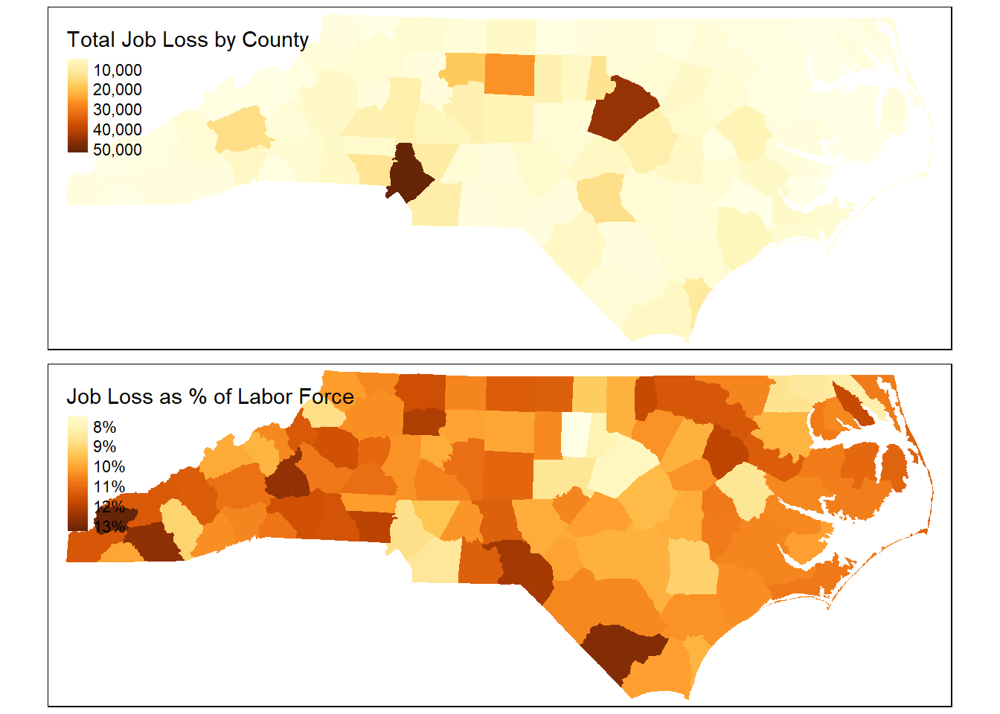
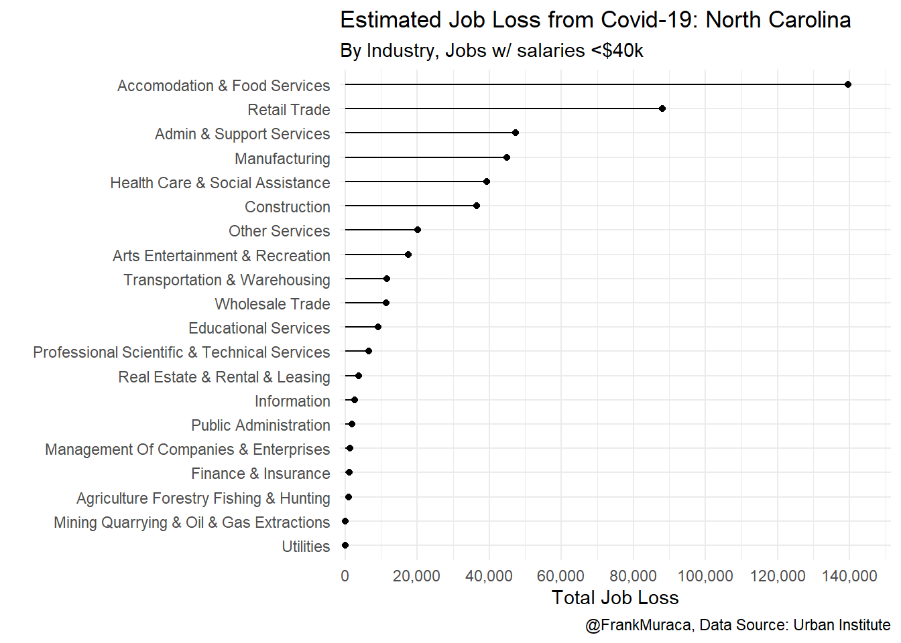

Measuring NC job loss from Covid-19
Over the past four weeks, more than 20 million people have filed for unenmployment as the country adjusts economic fallout of Covid-19. While we still don’t know the longterm impacts of the pandemic, swift and widespread job loss puts pressure on millions of Americans rising medical, housing, and school-related costs.
In mid-April the Urban Institute released new estimates of the number of low-income jobs (<$40k salary) lost as a result of Covid-19. In this post, we’ll use this data to measure job loss in North Carolina while adding some simple Census data for additional context.
The data!
The estimates rely on three sources of data - the BLS, Washington State Employment Security Deparment, and 2017 LODES data - to predict job loss counts for every census tract in the US. Washington State publishes weekly unemployment claims by industry sector and are used for this analysis until the BLS releases national unemployment figures by industry in May. The full methodology is here.
The dataset also has a file for job loss by county which we’ll use first.
# We'll be using the following packages:
library(geojsonsf)
library(sf)
library(tidyverse)
library(hrbrthemes)
library(scales)# The Urban Institute included a codebook for each of the 21 industries. We'll rename the values so we know which industries to look at.
covid_county <- geojson_sf("https://ui-lodes-job-change-public.s3.amazonaws.com/sum_job_loss_county.geojson") %>%
filter(state_name=="North Carolina") %>%
mutate(county_name = str_remove(county_name," County"))
industry_codebook <- read_csv("https://ui-lodes-job-change-public.s3.amazonaws.com/lehd_types_s3.csv")
### Filter and rename variables based on codebook --------
covid_industry <- covid_county %>% select(starts_with("X"), -geometry) ## Break out industry variables into new dataframe
## Replace industry variable names based on matched name from the codebook
names(covid_industry) <- industry_codebook$lehd_name[match(names(covid_industry),industry_codebook$lehd_var)]
covid_county <- covid_county %>%
select(-starts_with("X")) %>% ## drop the uncoded variables
cbind(covid_industry) ## merge columns with the new renamed variables
library(janitor)
covid_county <- covid_county %>%
clean_names()Where are North Carolina’s ‘hadest hit’ counties?
The file we downloaded includes all the counties in the US. Let’s only select North Carolina. We’ll then visualize the the top 15 counties by total job loss using a lollipop plot.
county_viz_losstotal <- covid_county %>%
arrange(desc(total_job_loss_index)) %>% ## put highest job loss counties at the top
top_n(total_job_loss_index,n=15) %>% ## select top 15
select(county_name,total_job_loss_index) %>%
ggplot(aes(x=reorder(county_name,total_job_loss_index),y=total_job_loss_index)) +
geom_point() +
geom_segment(aes(x=county_name,xend=county_name,y=0,yend=total_job_loss_index)) +
coord_flip() +
theme_minimal() +
scale_y_comma(limits=c(0,52000)) +
labs(y="Total Job Loss",
title="Estimated Job Loss from Covid-19",
subtitle = "Top 15 Counties in NC, Jobs w/ salaries <$40k",
caption="@FrankMuraca, Data Source: Urban Institute",
x=NULL)
county_viz_losstotal
Unsurprisingly, job loss is highest in North Carolina’s seven metro counties - with Raleigh and Charlotte accounting for about 20% of jobs lost in the state. Now let’s see if the same is true when looking at job loss as a percentage of the overall labor force.
Let’s use the tidycensus package to pull labor force estimates for each county in the state. If you’re a longtime American Factfinder user (RIP), this is a great tool to quickly grab Census data over many years and for different geographies.
Note: The Tidycensus requires an API key, which can be acquired here.
library(tidycensus)
county_laborforce <- get_acs(variables = c(civilian_lf = "B23025_003"), ## The variable code for civilian labor force
year = 2018,
state="NC",
geography="county") %>%
mutate(NAME=str_remove(NAME, " County, North Carolina")) ## Clean up county name column so we can merge with the job loss dataframe
covid_county <- merge(covid_county, county_laborforce, by.x='county_name', by.y ='NAME') ## Merge with original county data
## Recreate job loss by county but as percentage of overall labor force
county_viz_losslbf <- covid_county %>%
mutate(pctlbf = total_job_loss_index/estimate) %>% ## "Estimate" stands in for labor force when pulled using TidyCensus
arrange(desc(pctlbf)) %>%
top_n(pctlbf,n=15) %>%
ggplot(aes(x=reorder(county_name,pctlbf),y=pctlbf)) +
geom_point() +
geom_segment(aes(x=county_name,xend=county_name,y=0,yend=pctlbf)) +
coord_flip() +
theme_minimal() +
scale_y_percent(limits = c(0,.20)) +
labs(y="Job Loss as Percentage of Labor Force",
title="Estimated Job Loss from Covid-19 (% of Labor Force)",
subtitle = "Top 15 Counties in NC, Jobs w/ salaries <$40k",
caption = "@FrankMuraca, Data Source: Urban Institute",
x=NULL)
county_viz_losslbf
When we look at job loss as percentage of overall labor force, North Carolina’s more rural counties are hardest hit by the economic fall out of Covid-19. Let’s use the tmap package to visualize the difference in these two metrics.
library(tmap)
## Create map of total loss
map_county_totalloss <- covid_county %>%
tm_shape() +
tm_polygons(c("total_job_loss_index"), # Variable we want to visualize
title = c("Total Job Loss by County"),
style= "cont",
palette = "seq",
border.col = NULL) +
tm_legend(legend.position = c("left", "top"))
# Create map of job loss as percentage of labor force
map_county_pctlbf <- covid_county %>%
mutate(pctlbf = (total_job_loss_index/estimate)*100) %>%
tm_shape() +
tm_polygons(c("pctlbf"), # Variable we want to visualize
title = c("Job Loss as % of Labor Force"),
style= "cont",
palette = "seq",
border.col = NULL,
legend.format=c(list(fun=function(x) paste0(formatC(x, digits=0, format="f"), "%")))) + # To convert numbers to percentages in the legend
tm_legend(legend.position = c("left", "top"))
library(grid) # Use the grid package the stack the two maps
grid.newpage()
pushViewport(viewport(layout = grid.layout(2,1)))
print(map_county_totalloss,vp=viewport(layout.pos.row = 1))
print(map_county_pctlbf,vp=viewport(layout.pos.row = 2))
What neighborhoods are hardest hit?
Not all industries are equally impacted by the pandemic. Food, hospitality, retail, and some health care subsectors have had to cut back or stop operations to help slow the spread of Covid-19. In North Carolina, over 140,000 of the low-income jobs lost occurred in food & accomodation industries, and nearly 90,000 were lost in retail industries.
covid_county %>%
select(county_name, county_fips, state_name, variable, estimate, moe, max, tmax, everything()) %>% # We'll rearrange the columns to keep industries together
pivot_longer(cols=accomodation_and_food_services:public_administration, # Put industry columns into "long" format
names_to = "Industry", # Create new column that will contain industry names
values_to = "Job_Loss") %>% # New column for job loss estimates
# Let's clean up the industry names
mutate(Industry = str_replace_all(Industry,"_"," "), # replace underscores with spaces
Industry = str_replace_all(Industry, "and", "&"), # replace 'and" with '&'
Industry = str_to_title(Industry), # capitalize industry names
Industry = recode(Industry, # Shorten admin support services industry name
'Administrative & Support & Waste Management & Remediation Services' = "Admin & Support Services")) %>%
group_by(Industry) %>%
filter(Industry != "Total Job Loss Index") %>% # remove total jobs to avoid double counting
summarise(totaljobs = sum(Job_Loss)) %>%
ggplot(aes(x=reorder(Industry,totaljobs),y=totaljobs)) +
geom_point() +
geom_segment(aes(x=Industry,xend=Industry,y=0,yend=totaljobs)) +
coord_flip() +
theme_minimal() +
scale_y_comma(limits = c(0,150000),
breaks = seq(0,140000,20000)) +
labs(x="",
y="Total Job Loss",
title="Estimated Job Loss from Covid-19: North Carolina",
subtitle = "By Industry, Jobs w/ salaries <$40k",
caption = "@FrankMuraca, Data Source: Urban Institute")
Up until now, we’ve been looking at state and county-wide job loss. What about at the neighborhood level? The Urban Institute also provides estimates for low-income job loss for Census tracts. Let’s download that data and look the relationship between job loss and tract poverty rate. Many of these steps will be repeated from the county data.
covid_tract <- geojson_sf("https://ui-lodes-job-change-public.s3.amazonaws.com/job_loss_by_tract.geojson") %>% filter(substr(GEOID,1,2)==37)
### Filter and rename variables based on codebook --------
covid_industry <- covid_tract %>% select(starts_with("X"), -geometry) ## Break out industry variables into new dataframe
names(covid_industry) <- industry_codebook$lehd_name[match(names(covid_industry),industry_codebook$lehd_var)] ### Replace industry variable names based on matched name from the codebook
covid_tract <- covid_tract %>%
select(-starts_with("X")) %>% ## drop the uncoded variables
cbind(covid_industry) ## merge columns with the new renamed variables
covid_tract <- covid_tract %>% clean_names()### Select census data for NC census tracts
tract_pov <- get_acs(variables = c(population = "B17010_001", # total population
belowpov = "B17010_002", # population below poverty rate
civilian_lf = "B23025_003"), #civilian labor force
year = 2018,
state="NC",
geography="tract") %>%
pivot_wider(id_cols=GEOID, ## Pivot data frame to "wide" format so we can merge with the job loss dataframe
names_from = variable,
values_from = estimate) %>%
mutate(povrate = belowpov/population)
covid_tract <- merge(covid_tract,tract_pov,
by.x = "geoid",by.y="GEOID") %>%
mutate(pctlbf = total_job_loss_index/civilian_lf,
food_pctlbf = accomodation_and_food_services/civilian_lf)
covid_tract %>%
filter(pctlbf<.3, # remove outliers
povrate>0) %>%
ggplot(aes(x=povrate,y=pctlbf)) +
geom_point(alpha=.3) +
geom_smooth(method = "loess") +
theme_minimal() +
scale_x_percent() +
scale_y_percent() +
labs(x="Tract Poverty Rate",
y="Job Loss as Percentage of Tract Labor Force",
title = "Estimated Job Loss from Covid-19: North Carolina Census Tracts",
subtitle="Total jobs w/ salaries <$40k as percentage of labor force",
caption = "@FrankMuraca, Data Source: Urban Institute")
Census tracts with higher poverty rates tend to have higher levels of low-income job loss.